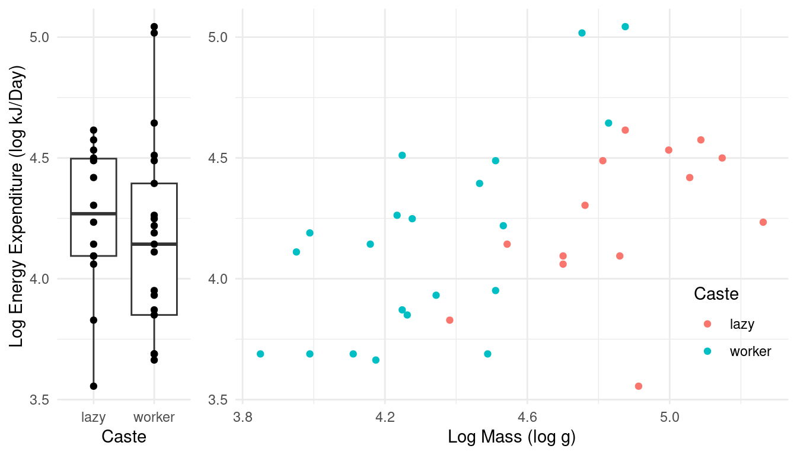

You can also download a PDF copy of this lecture.
The purpose of this exercise is to familiarize you with the
specification of linear models and contrasts within R. You will need to
have the following packages installed: abd,
cowplot, ggplot2, and
trtools. You should already have
ggplot2 and trtools installed. The
other packages can be installed using
install.packages("abd") and
install.packages("cowplot"), or
install.packages(c("abd","cowplot")).
This exercise features data from a study published in Nature
in 2006.1
The data can be found in the data frame MoleRats, included
in the package abd. You can inspect the data frame by
typing MoleRats at the prompt after you load the package
with library(abd), and you can look at a summary of the
data with summary(MoleRats) or the structure of the
variables with str(MoleRats). The study concerned two
“castes” of Damaraland mole-rats (Cryptomys damarensis):
frequent workers (denoted here as “worker”) and infrequent workers
(denoted here as “lazy”). The researchers observed the body mass (g) and
daily energy expenditure (kJ/day) of samples mole-rats from both castes.
Our objective is to model the difference between the two castes in terms
of daily energy expenditure. However, mole-rats in the two castes differ
by body mass, which may also be related to energy expenditure.
Here are plots of the raw data, showing the distribution of log energy expenditure for lazy and worker caste rats, and then again but also taking into account the (log) mass of the rats.
library(abd) # for the data
library(ggplot2) # for plotting
library(cowplot) # for use of the plot_grid function
# boxplot
p1 <- ggplot(MoleRats, aes(x = caste, y = ln.energy)) +
geom_boxplot() + geom_point() + theme_minimal() +
labs(x = "Caste", y = "Log Energy Expenditure (log kJ/Day)")
# scatterplot
p2 <- ggplot(MoleRats, aes(x = ln.mass, y = ln.energy, color = caste)) +
geom_point() + theme_minimal() + theme(legend.position = c(0.9, 0.2)) +
labs(x = "Log Mass (log g)", y = NULL, color = "Caste")
# plot both plots side-by-side
plot_grid(p1, p2, align = "h", rel_widths = c(1,3)) Note that both energy expenditure and mass are recorded on the (natural) log scale. We will be modeling both of these variables on the log scale.
First consider a model where expected log energy expenditure is
modeled as a function of only caste. Use the lm function to
estimate this model. We should see in the output of the
summary function applied to the model object that R will,
by default, parameterize this model as \[
E(Y_i) = \beta_0 + \beta_1 d_i,
\] where \(Y_i\) is the log of
energy expenditure of the \(i\)-th
observation and \[
d_i =
\begin{cases}
1, & \text{if the $i$-th observation is of a worker}, \\
0, & \text{otherwise},
\end{cases}
\] so that the model can also be written as \[
E(Y_i) =
\begin{cases}
\beta_0, & \text{if the $i$-th observation is from the lazy caste},
\\
\beta_0 + \beta_1, & \text{if the $i$-th observation is from the
worker caste}.
\end{cases}
\]
Consider the following three quantities and how they can be
expressed as functions of the model parameters: the expected log energy
expenditure of mole-rats from the lazy caste (\(\beta_0\)), the expected log energy
expenditure of mole-rats from the worker caste (\(\beta_0 + \beta_1\)), and the difference in
expected log energy expenditure between the two castes (\(\beta_1\) if we subtract lazy from worker).
Note that using summary provides inferences for \(\beta_0\) and \(\beta_1\), but not \(\beta_0 + \beta_1\). All three quantities
can be written as a linear combination of the form \[
\ell = a_0\beta_0 + a_1\beta_1 + b.
\] How can we use the lincon and
contrast functions to estimate these three quantities? Note
that inferences for two of these quantities — i.e., the expected log
expenditure of mole-rats of the lazy caste and the
difference in the expected log expenditures between the two
castes — should match those given by using summary and
confint applied to the model object.
The model we considered above compares the two castes of
mole-rats, but it does not account for differences in their sizes. The
lazy mole-rats tend to be larger than the worker mole-rats. It may be
useful to compare rats in the two castes while “controlling for size”
meaning that comparisons can be made between mole-rats in different
castes but of the same size. We can use lm to estimate a
linear model that includes both caste and the log of mass as explanatory
variables. If we list caste first in the right-hand side of
the model formula then the model will be parameterized as \[
E(Y_i) = \beta_0 + \beta_1 d_i + \beta_2 \log(m_i),
\] where \(d_i\) is defined as
before and \(\log(m_i)\) is the log of
mass of the \(i\)-th observation (i.e.,
the ln.mass variable). Note that this model can also be
written as \[
E(Y_i) =
\begin{cases}
\beta_0 + \beta_2 \log(m_i),
& \text{if the $i$-th observation is from the lazy caste}, \\
\beta_0 + \beta_1 + \beta_2 \log(m_i),
& \text{if the $i$-th observation is from the worker caste}.
\end{cases}
\]
Using the code given above, add lines to the plot to show the estimated expected log energy expenditure as a function of log mass and caste.
With the model now including the log of mass as an explanatory
variable, comparisons between the castes must also consider mass. How
can we use contrast to estimate the expected log energy
consumption for a mole-rat from each of the two castes with a log mass
of 4.5? Also how can we estimate the difference in expected log
energy expenditure between the two castes for a mole-rat with log mass
4.5? How can we do the same for log masses of 4.0 and 5.0? Our estimates
should be consistent with the figure (i.e., they should look reasonable
based on “eyeball” estimates from the figure). Also because the model
specifies that the two lines are parallel, the estimated difference in
expected log energy consumption between the castes will not depend on
mass.
The parameter \(\beta_2\) is the
rate of change of the expected log energy consumption per unit increase
in the log of mass. Inferences concerning this quantity can be obtained
simply using summary and confint applied to
the model object, but as an exercise how can we estimate this rate of
change for each caste using the contrast function?
Naturally we should find that the estimated rate is the same for each
caste.
A test to determine if there is a statistically significant
difference in expected log energy expenditure between the two castes
uses the null hypothesis \(H_0\!: \beta_1 =
0\) based on how the model was parameterized earlier. How can we
test this null hypothesis using the full-null model approach (i.e., by
specifying a null model based on the full model but with \(\beta_1 = 0\)) and using the
anova function? We should find that the resulting \(F\) test statistic is the square of the
\(t\) test statistic from
summary, and that the p-values from summary
and anova are the same.
Repeat 3-6 with both caste and ln.mass
as explanatory variables, but now with an “interaction” between the them
by including caste:ln.energy in your model formula. Note
that this model can be written case-wise as \[
E(Y_i) =
\begin{cases}
\beta_0 + \beta_2 \log(m_i),
& \text{if the $i$-th observation is from the lazy caste}, \\
\beta_0 + \beta_1 + (\beta_2 + \beta_3) \log(m_i),
& \text{if the $i$-th observation is from the worker caste}.
\end{cases}
\]
Scantlebury, M., Speakman, J. R., Oosthuizen, M. K., Roper, T. J., & Bennett, N. C. (2006). Energetics reveals physiological distinct castes in a eurosical mammal. Nature, 440, 795-797.↩︎